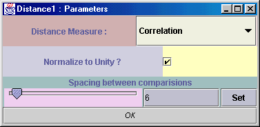

Input Types : VectorType
Output Types : VectorType
Date : 01 Jun 2001
The unit called Distance measures the Euclidean Distance or Correlation between N-Dimensional Vectors.
The vectors can be stored within any VectorType e.g. SampleSet, Spectrum etc. If the two data sets are the same size
then a straight comparison is performed between the 2 vectors. However, if one data set is longer, then the smaller
set is slid along the larger data set in steps of distances set by the spacing parameter that can be set
within the user interface.
Distance's parameter window (double-click on the unit while holding down the Control key) is used to control the type of distance measure used for the comparison (Correlation or Euclidean Distance), whether to normalize the patterns to unity before comparing and to set the spacing between comparisons.

Example
Say you had two data sets, one with 1260 patterns each pattern containing 6 elements (i.e.7560 points). The second data set would consist of 1 pattern with 6 elements. To produce a distance plot of this one pattern with all 1260 patterns within the data set you would set the "spacing between comparisons" parameter to 6. In operation, this means that it will perform a comparison between the 6-vector in second data set with the first 6 elements of the first data set, then move along the first data set by 6 elements, and then compare again. The output is the distance for each comparison so in this example, the output vector would consist of 1260 points, one for each comparison.